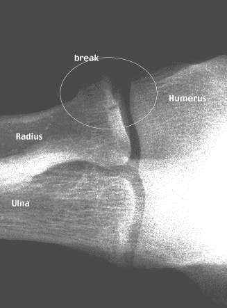

Professional Info
Personal info
Family photos.
My love of automobiles.
My love of photography.
My love of movies.
My love of music.
Safety Lesson!
This X-Ray indicates the consequences of exercise without proper safety equipment:
|  | On Saturday, October 10, 1998, I took advantage of a fabulous Silicon Valley fall day, and went out for a skate around the block. Unfortunately, I managed to also take a spill, and a collision with the pavement left me with multiple skin abrasions and a fractured radial head. Lesson: Always Use Elbow and Knee Pads! |
On Wednesday, July 30, 1997, I went over to the Apple cafeteria to have lunch with some friends who still work there. On the way over, we noticed that a news crew from KRON-TV 4 in San Francisco was at the R&D campus. As we passed the cameraman and reporter, we were stopped and asked what our opinions were regarding the rumors of Steve Jobs' impending ascension to the Board Chairman's seat. I gave a few encouraging "sound bites" and we went on our way. Imagine my surprise when I learned later that my clip was used on the 6 o'clock news!
Requires RealPlayer
RealPlayer Software with over 30 years in the industry.
(Click image to see my Halloween costume)
My Movie Career
During the time I lived in the Los Angeles area (1977 - 1989), I worked very hard to get into the movies. I had some moderate success...
Links to some favorite sites on the Web...
Internet Movie databaseAll the News about Everything
Great Claymation from the U.K.
Gary Larson's Far Side archives.
Back to Mark's Home Page.
Copyright © 1996-2017, Computer Wizards™